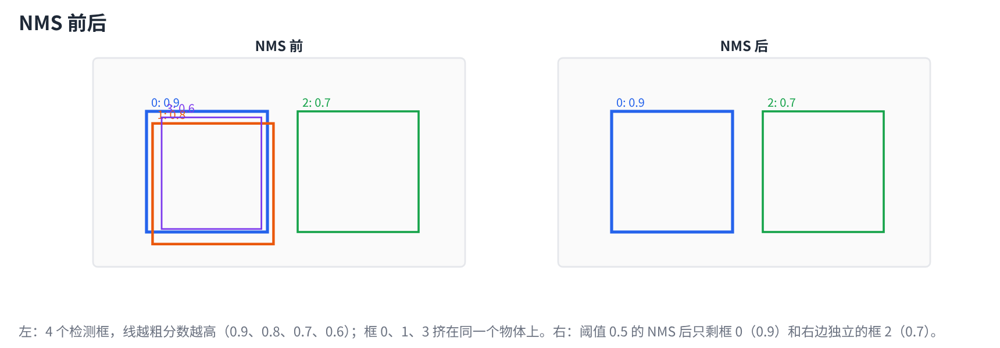
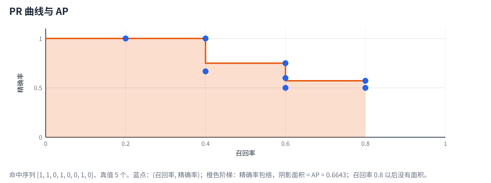
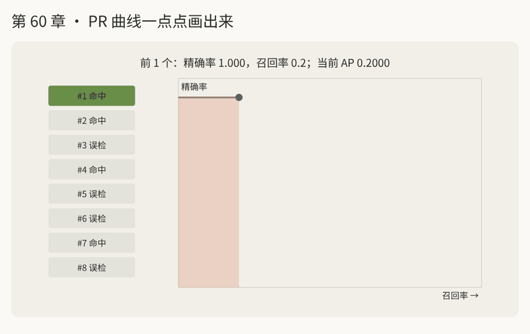

第 60 章 · 感知的学习与评测：IoU、NMS、PR 曲线与 AP、匈牙利匹配、度量学习与地点识别
本地运行
git clone https://github.com/wikieden/math-and-eval-stats
cd math-and-eval-stats/code/notebooks
pip install jupyterlab torch numpy
jupyter lab ch60_perception_metrics.ipynb也可以下载后直接用 VS Code 打开 .ipynb 运行。需要 GPU 的章节在 Colab 里选「代码执行程序 → 更改运行时类型 → GPU」。
本章回答：检测框“对不对”用什么量？一堆重叠的框怎么去重？mAP 是怎么从一条 PR 曲线算出来的？DETR 为什么要用匈牙利匹配，贪心匹配差在哪？地点识别为什么学的是“距离”，三元组损失和 InfoNCE 各在拉近什么、推远什么？
讲解日期：2026-11-25 · 上一章：第 59 章 神经场景表示 · 下一章：第 61 章 多模态融合的数学
对应原文：DETRmath-and-eval-stats/materials/text/papers/detr-2005.12872.txt（集合预测与匈牙利匹配，式 (1) L218；L134–L195）；NetVLADmath-and-eval-stats/materials/text/papers/netvlad-1511.07247.txt（VLAD 描述子 V(j, k)，K × D 矩阵 L170–L176；软分配式 (3) L265–L274）；CPCmath-and-eval-stats/materials/text/papers/cpc-infonce-1807.03748.txt（§2.3 InfoNCE，式 (4) L165–L173）
本章缩写：IoU = Intersection over Union（交并比）；NMS = Non-Maximum Suppression（非极大值抑制）；PR = Precision-Recall（精确率 / 召回率）；AP / mAP = (mean) Average Precision（（各类）平均精确率）；TP / FP = 真 / 假阳性；DETR = DEtection TRansformer（检测 Transformer）；VLAD = Vector of Locally Aggregated Descriptors（局部聚合描述子向量）；InfoNCE = Info Noise-Contrastive Estimation（信息 / 噪声对比估计）；τ = 温度。全部缩写见 附录 · 缩写与术语表
讲解
第一步：IoU：两个框重合得多不多（2026-11-25）
例子：
| 框 A | 框 B | IoU |
|---|---|---|
| (10, 10, 50, 50) | (12, 14, 52, 54) | 0.7467 |
| (10, 10, 50, 50) | (60, 10, 100, 50) | 0 |
检测评测里 IoU ≥ 0.5（COCO 还看 0.5 到 0.95 的平均）才算一个检测“命中”某个真值。IoU 当损失的问题：不重合时恒为 0、没有梯度，所以有 GIoU、DIoU 等改进（加上“包住两个框的最小框”之类的项）。
一句话：IoU = 交 / 并，是判断检测框命中与否的标准；不重合时为 0、没有梯度。
第二步：NMS：一个物体只留一个框（2026-11-25）
检测器常在同一个物体上给出好几个高度重叠的框。NMS：按分数从高到低，保留当前最高的框，删掉和它 IoU > 阈值的其余框，重复。
例子（4 个框，分数 0.9、0.8、0.7、0.6，其中 0、1、3 是同一个物体，阈值 0.5）：保留 [0, 2]。框 1（IoU 0.75）和框 3 被框 0 压掉，框 2 和框 0 不重合，保留。
NMS 的问题：两个真物体靠得很近时会误删（阈值是硬的）；不可微。DETR 用集合预测 + 匈牙利匹配（第四步）直接让模型输出不重复的框，不需要 NMS。

图 60-1 · 左：4 个检测框（线越粗分数越高），三个挤在同一个物体上；右：NMS（阈值 0.5）后只剩分数最高的那个和右边独立的那个一句话：NMS 按分数贪心保留、压掉高 IoU 的重复框；硬阈值会误删相邻物体，DETR 用集合匹配绕开它。
第三步：PR 曲线与 AP（2026-11-25）
把所有检测按分数从高到低排，逐个判断命中（TP）还是误检（FP）：
AP = 精确率包络（每个召回率位置取右侧的最大精确率）对召回率的面积。
例子（8 个检测、5 个真值，命中序列 [1, 1, 0, 1, 0, 0, 1, 0]）：
| k | 1 | 2 | 3 | 4 | 5 | 6 | 7 | 8 |
|---|---|---|---|---|---|---|---|---|
| 精确率 | 1.0 | 1.0 | 0.667 | 0.75 | 0.6 | 0.5 | 0.571 | 0.5 |
| 召回率 | 0.2 | 0.4 | 0.4 | 0.6 | 0.6 | 0.6 | 0.8 | 0.8 |
AP = 0.2 × 1 + 0.2 × 1 + 0.2 × 0.75 + 0.2 × 0.571 = 0.6643。有一个真值始终没被检出，召回率最高 0.8，这部分面积直接丢掉。mAP = 各类别 AP 的平均（COCO 还在多个 IoU 阈值上再平均）。第 1–7 章讲的置信区间同样适用：测试集小时 mAP 的差异要看区间。

图 60-2 · 蓝点是 8 个 (召回率, 精确率)；橙色阶梯是精确率包络，阴影面积就是 AP = 0.6643；召回率 0.8 之后没有面积一句话：按分数排序算累计精确率和召回率，AP 是精确率包络下的面积；漏检直接截掉召回率。
第四步：匈牙利匹配：一对一、总代价最小（2026-11-25）
DETR（式 (1)，L218）一次输出 N 个预测，训练时要先决定“哪个预测负责哪个真值”。代价 = 类别概率 + 框的 L1 + GIoU；要求一对一、总代价最小：这是指派问题，匈牙利算法 O(n³) 精确求解。
例子（3 个预测 × 3 个真值的代价矩阵 [[1, 2, 8], [1.5, 6, 9], [7, 3, 4]]）：
| 方法 | 分配（预测 → 真值） | 总代价 |
|---|---|---|
| 匈牙利 | 0→1、1→0、2→2 | 7.5 |
| 贪心（每次挑全局最小的一对） | 0→0、1→2、2→1 | 13.0 |
贪心先拿了最便宜的 (0, 0) = 1，逼得预测 1 只能去代价 9 的真值 2。匈牙利算法看全局：让预测 0 让出真值 0。
一句话：匈牙利算法求一对一、总代价最小的匹配；贪心局部最优，可能把别人逼到很贵的位置。
第五步：度量学习与地点识别（2026-11-25）
地点识别：给一张图，在数据库里找拍摄于同一地点的图（回环检测、视觉定位）。做法是学一个嵌入，让同一地点的图距离近、不同地点的远，检索就是最近邻（第 54 章的近似版）。
三元组损失：max(0, d(a, p) − d(a, n) + m)：正样本要比负样本近至少 m。
| d(a, p) | d(a, n) | 损失（m = 0.2） |
|---|---|---|
| 0.3 | 0.9 | 0（已经够远） |
| 0.5 | 0.6 | 0.10 |
| 0.8 | 0.5 | 0.50 |
InfoNCE（CPC 式 (4)，L165–L173）：一个正样本和 N 个负样本做 softmax 分类，−log(e^{s⁺/τ}/Σe^{s/τ})。它的下界性质：互信息 ≥ log N − L_N。
例子（正样本相似度 0.8，负样本 [0.6, 0.3, 0.1, 0.0]）：
| τ | 1.0 | 0.1 | 0.05 |
|---|---|---|---|
| InfoNCE | 1.2153 | 0.1339 | 0.0182 |
τ 越小，越关注最难的负样本（0.6 那个）；太小训练不稳（第 37 章 softmax 饱和）。CLIP（第 62 章）就是图文版的 InfoNCE。
NetVLAD（L170–L176、L265–L274）：把一张图的 D 维局部特征软分配到 K 个聚类中心，对每个中心累加残差 Σa_k(x_i)(x_i − c_k)，拼成 K × D 维描述子（K = 64、D = 512 时 32,768 维），再降维检索。
场景代码：scipy 的匈牙利匹配和 torchvision 的 NMS（真实库调用；torchvision 本书环境没装，没跑过）：
from scipy.optimize import linear_sum_assignment
rows, cols = linear_sum_assignment(cost) # DETR 的二分匹配
keep = torchvision.ops.nms(boxes, scores, iou_threshold=0.5)
一句话：度量学习让同一地点的嵌入近、不同的远；三元组用间隔、InfoNCE 用 softmax 分类，τ 控制对难负样本的关注。
动画演示：PR 曲线一点点画出来

可交互版：animations/60-perception-metrics.html（滑块调已经看过的检测数；下拉切换两种命中序列）。
怎么看：
- 左边是按分数排好的检测列表，命中的是绿色、误检是红色（第三步）；
- 右边逐个加点：命中时召回率往右走一格、精确率回升；误检时召回率不动、精确率下降；
- 看完全部后，橙色包络下的面积就是 AP，右上角给出数值。
练习与作答记录
题 1（第一步）：框 (0, 0, 4, 4) 和 (2, 2, 6, 6) 的 IoU 是多少？
作答：（待作答）
题 2（第三步）：5 个检测的命中序列 [1, 0, 1, 1, 0]，真值共 4 个，算每一步的精确率、召回率和 AP。
作答：（待作答）
题 3（第四步）：代价矩阵 [[4, 1], [2, 3]]，匈牙利匹配和贪心匹配各是什么、总代价各多少？
作答：（待作答）
口诀
IoU 交比并，过半才算中；
NMS 按分数留高的、压重叠的，靠太近会误删；
排序算累计 P 和 R，AP 是包络下的面积，漏检截掉召回；
匈牙利一对一看全局，贪心会把别人逼到贵处；
度量学习拉近正、推远负，τ 小盯难负样本。
本章复习卡片
ST195（IoU 与 NMS）、ST196（PR 曲线与 AP 的算法）、ST197（匈牙利匹配；三元组损失、InfoNCE 与 NetVLAD）。练习做完后，按答错、卡住的地方补上。
附录 · 延伸阅读
留给以后深入学习用，不影响本章主线。★ 是建议先读的。
推荐阅读
| 读什么 | 读哪里 | 读它为了什么 |
|---|---|---|
| ★ DETR（Carion 2020） | §3.1（式 (1)–(2)，L218） | 集合预测与匈牙利匹配损失 |
| ★ CPC（van den Oord 2018） | §2.3（式 (4)，L165） | InfoNCE 与互信息下界 |
| NetVLAD（Arandjelović 2016） | §3（L170–L274） | 可学习的 VLAD 聚合 |
| 第 1–7 章 评测统计 | 全部 | 指标的置信区间与比较 |
| 第 10 章 信息论与 KL | 互信息一节 | InfoNCE 的下界从哪来 |
数学原理
- AP 的包络：p_interp(r) = max_{r′≥r} p(r′)，保证 PR 曲线单调不增再求面积。
- 指派问题：min Σc_{iσ(i)} over 置换 σ；线性规划松弛的顶点是置换矩阵，匈牙利算法用对偶变量 O(n³) 求解。
- InfoNCE 的下界：I(x; c) ≥ log N − L_N（N 是候选总数）。
- 三元组损失的几何：正样本必须落在以锚点为中心、半径 d(a, n) − m 的球内。
公式清单
| 公式 | 意思 |
|---|---|
| \(\text{IoU} = \lvert A\cap B\rvert/\lvert A\cup B\rvert\) | 交并比 |
| \(P_k = TP_k/k\)，\(R_k = TP_k/N_{gt}\) | 精确率、召回率 |
| AP = ∫ p_interp(r) dr | 平均精确率 |
| \(\hat\sigma = \arg\min_\sigma\sum\mathcal L(y_i, \hat y_{\sigma(i)})\) | 匈牙利匹配 |
| \(\max(0, d_{ap} - d_{an} + m)\) | 三元组损失 |
| \(-\log\frac{e^{s^+/\tau}}{\sum e^{s/\tau}}\) | InfoNCE |
代码对照：把本章的数字用代码算一遍
代码在仓库本地
math-and-eval-stats/solutions/chapter-code/ch60_perception_metrics.py，配套测试tests/test_ch60.py：
bash cd math-and-eval-stats/solutions/chapter-code uv run python ch60_perception_metrics.py uv run pytest tests/test_ch60.py
讲义 ↔ 代码：
| 讲义 | 公式 | 写法 | 跑出来 |
|---|---|---|---|
| 第一步 IoU | 交 / 并 | iou(a, b) |
0.7467 |
| 第二步 NMS | 贪心压制 | nms() |
[0, 2] |
| 第三步 AP | 包络面积 | ap() |
0.6643 |
| 第四步 匹配 | 匈牙利 / 贪心 | hungarian()、greedy() |
7.5 vs 13.0 |
| 第五步 损失 | 三元组 / InfoNCE | triplet、infonce |
0.10；1.2153 → 0.0182 |
关键几行：
env = np.maximum.accumulate(prec[::-1])[::-1] # 精确率包络：右侧最大值
r, c = linear_sum_assignment(cost) # 匈牙利匹配
return float(-(z[0] - (z.max() + np.log(np.exp(z - z.max()).sum())))) # InfoNCE（稳定的 logsumexp）
代码里才看得到的 3 件事：
- 命中序列是直接给的：真实评测要先按 IoU ≥ 0.5 把检测和真值配对（每个真值只能被一个检测占用），这一步决定了 TP / FP。
- AP 用的是“所有点插值”：PASCAL VOC 2007 用 11 点插值，COCO 用 101 点，三种算法的数值略有不同。
- 每个指标只算了一个小例子：IoU、NMS、mAP、匈牙利匹配的完整实现和测试留给自己做（里程碑 ME-M35）。
自己改一改（不影响练习答案）：
- 把 NMS 阈值改成 0.8，
nms()保留哪些框？ - 把命中序列最后一个改成 1（第 5 个真值也被检出），AP 变成多少？